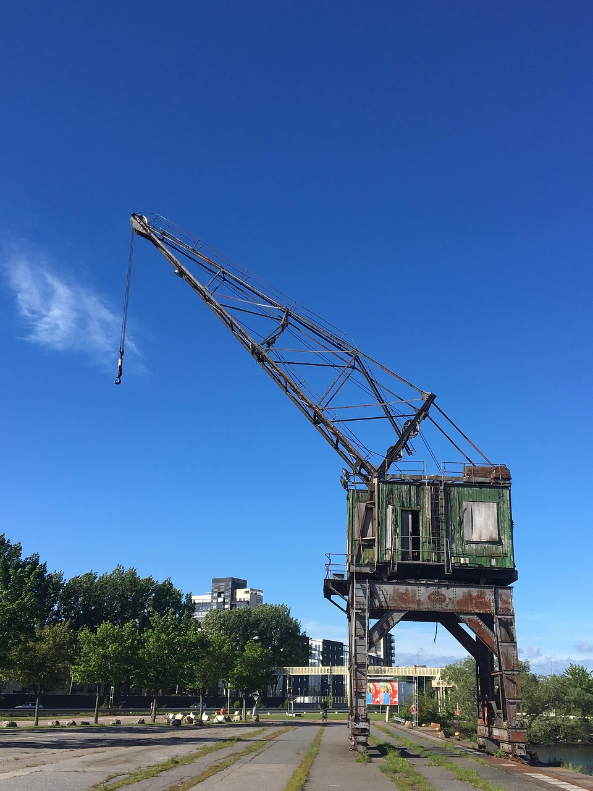

Här är en lista över våra produkter:
| Bild | Produkt | Pris | Info |
|---|---|---|---|
| Grävskopa | 1000 kr | En grävskopa är ett oumbärligt verktyg för alla typer av grävarbeten, från grundläggning av byggnader till vägbyggnation och landskapsarbete. Med sin kraftfulla hydraulik och mångsidiga skopor är den perfekt för att gräva, lyfta och transportera material. | |
|  | Lyftkran | 2000 kr | En lyftkran är en kraftfull maskin som används för att lyfta och flytta tunga laster på byggarbetsplatser och industrier. Med sin höga lyftkapacitet och precision är den oumbärlig för alla typer av byggprojekt. |
| Lastbil | 3000 kr | En lastbil är en mångsidig transportlösning som används för att transportera gods och material över långa avstånd. Med sin stora lastkapacitet och olika konfigurationer är den perfekt för både kommersiella och privata transporter. |
För mer information om våra produkter, vänligen Kontakta oss.